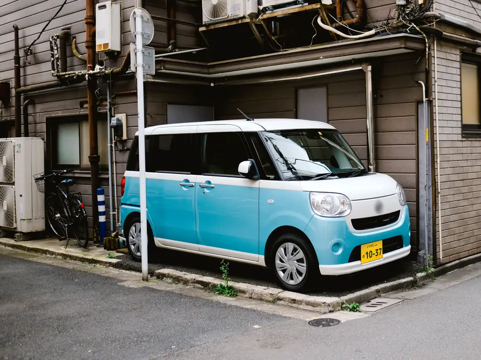
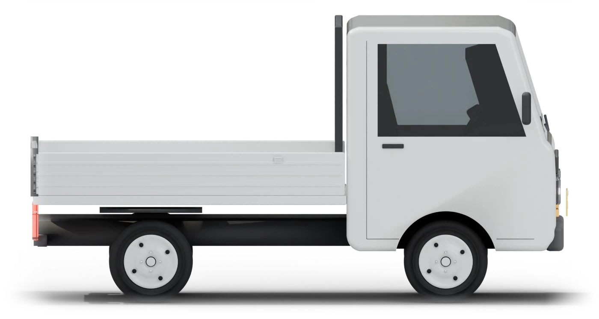
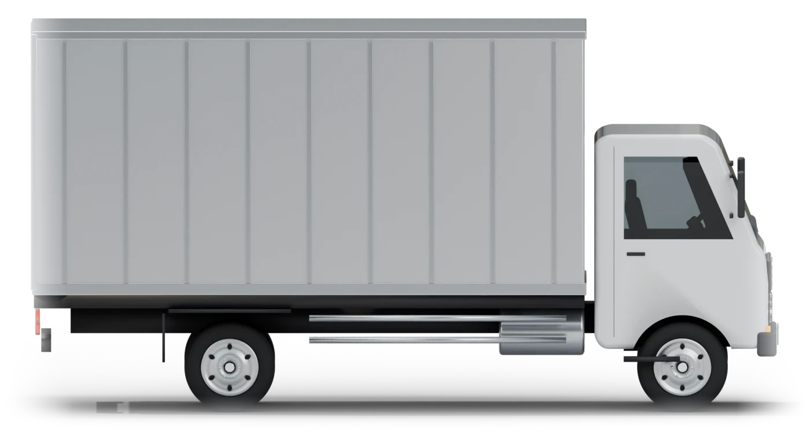

厚木本店（本社）
〒243-0806
神奈川県厚木市下依知2-15-12

写真はイメージです
ご自宅で査定して、金額はその場でお伝えします。来るのは、当社1社だけです。
「今日決めて」とは、言いません。
約1分・お名前と電話番号だけ
通話無料・毎日8:00〜23:00（ただいま受付時間外です。フォームは24時間受け付けます）
お名前も電話番号も、いりません
メーカー・車種・年式・走った距離を選ぶだけです。
ご自宅に伺うのは
運営は、株式会社おてつだい.com（屋号：バルスリサイクル）です。車を売るのは、何年かに一度のことです。分からないことは、何度でも聞いてください。金額にご納得いただけなければ、その場でお断りいただいて大丈夫です。
ご高齢の方とのご契約では、ご家族の同席をおすすめしています。
〒243-0806
神奈川県厚木市下依知2-15-12
〒252-0244
神奈川県相模原市中央区田名1870-1
ノリカエのナンバー「10-37」は、4つのお約束を表しています。
ご連絡・ご訪問
一括査定ではありません。ご連絡も、ご訪問も、当社だけです。お断りのあと、こちらから営業のお電話はしません。
費用（神奈川県内）
出張・査定・引き取り・積載車・名義変更・廃車の手続き。お断りいただいても0円。買取額から差し引くこともありません。
例外印鑑証明書など、役所でお取りいただく書類の手数料だけは、お客様のご負担です。
お振込みまで
お車と書類がそろった日から、3営業日以内（土日祝・年末年始を除く）にお振込みします。
例外ローンが残っているお車は、ローン会社とのお手続きが済んでからになります。
お伝えした金額
その場で決めなくて大丈夫です。ご家族と相談してから決めてください。
条件事故や故障がなく、走行距離の増えが500km以内なら、相場が下がっても同じ金額です。
ご契約のあとの減額なし
査定で当社が見落としたことでは、減額しません。
例外修復歴（骨格まで直した事故の跡）・水没・メーターの巻き戻しを知っていてお伝えいただけなかったときと、お引き渡しまでに事故や故障があったときだけです。
お引き渡しの前なら取り消し無料
ご契約のあとも、お引き渡しの前なら、いつでも無料で取り消せます。
例外ご契約のその日にお引き取りするときは、お引き渡しのあとは取り消せないことを、ご契約の前にお伝えします。
一括査定・下取りとのちがい
何社もの電話を受けたくない方、ご自宅で決めたい方に向いた売り方です。
| くらべること | ノリカエ.com | 一括査定サイト | ディーラーの下取り |
|---|---|---|---|
| 連絡と訪問 | 当社だけ | 申し込むと、複数の会社から連絡が来るしくみ。会社ごとに査定に来ることもある | そのお店だけ。お店まで車を持って行く |
| 金額が出るまで | ご自宅で査定して、その場で | 各社の金額を待って、くらべる | 新しい車の商談と一緒に決まる |
| 古い車・動かない車 | 買い取ります。引き取りも0円 | 扱わない会社もある | 処分の費用がかかることがある |
どの売り方にも、よさがあります。下取りの見積もりがあれば、査定のときにお見せください。くらべてから決めて大丈夫です。
買い取る車
乗用車から4トントラックまで。車検が切れた車は、積載車で伺います。




ご家族の車も。運転をやめたご両親の車、入院中や施設に入った方の車、亡くなった方の車も、ご家族からご相談いただけます。くわしく見る
売るまでの流れ
1
お客様フォームかお電話で。約1分です。
当社受付時間内にお電話して、伺う日時を決めます。
2
お客様立ち会いをお願いします（30分ほど）。
当社車を見て、その場で金額と内訳をお伝えします。内訳は書面でお渡しします。
3
お客様車検証などの書類をご用意ください。
当社車を引き取り、名義変更や廃車の手続きをします。
4
お客様振込先の口座をお知らせください。
当社お車と書類がそろった日から、3営業日以内（土日祝・年末年始を除く）にお振込みします。
ご用意いただく書類は、よくある質問にまとめています。分からないときは、お電話でご説明します。
伺える地域
ご自宅まで無料で伺います。県外の方も、お電話でご相談ください。
相模原市・厚木市・大和市・海老名市・座間市・綾瀬市・愛川町・清川村
横浜市・川崎市
平塚市・藤沢市・茅ヶ崎市・秦野市・伊勢原市・寒川町・大磯町・二宮町
横須賀市・鎌倉市・逗子市・三浦市・葉山町
小田原市・南足柄市・中井町・大井町・松田町・山北町・開成町・箱根町・真鶴町・湯河原町
よくある質問
ほかにも気になることがあれば、お電話でどうぞ。
来ません。ノリカエ.comは一括査定ではないので、ご連絡するのは当社だけです。お断りのあと、こちらから営業のお電話をすることもありません。
ありません。査定で当社が見落としたことでは、減額しません。例外は、修復歴（骨格まで直した事故の跡）・水没・メーターの巻き戻しを知っていてお伝えいただけなかったときと、お引き渡しまでに事故や故障があったときだけです。そのときも、理由を書面でお見せします。
神奈川県内なら、出張・査定・引き取り（積載車を含む）・名義変更・廃車の手続きまで0円です。お断りいただいても費用はかからず、買取額から差し引くこともありません。印鑑証明書など、役所でお取りいただく書類の手数料だけは、お客様のご負担です。
お車をお引き渡しする前なら、いつでも無料でお取り消しいただけます。お電話一本で大丈夫です。ご契約のその日にお引き取りするときは、お引き渡しのあとは取り消せないことを、ご契約の前にお伝えします。お伝えした金額は7日間そのままなので、その場で決めなくて大丈夫です。
大丈夫です。積載車で引き取りに伺います。費用はかかりません。廃車にすると、自動車税などが戻ることもあります。
はい。車の持ち主がご本人のままでも、ご家族が窓口になって進められます。持ち主ご本人の印鑑登録証明書と実印（軽自動車は認印）をご用意いただき、書類に記入していただきます。
お車と必要な書類がそろった日から、3営業日以内（土日祝・年末年始を除く）にお振込みします。ローンが残っているお車は、ローン会社とのお手続きが済んでからになります。
はい。残っている金額を確かめて、ローン会社とのやり取りもご案内します。買取の金額で残りを精算できることもあります。
普通自動車は、車検証・自賠責保険証明書・印鑑登録証明書（発行から3か月以内）・実印・リサイクル券・自動車税の納税証明書です。軽自動車は、車検証・自賠責保険証明書・認印・リサイクル券・軽自動車税の納税証明書です。リサイクル券や納税証明書は、なくても大丈夫なことが多いです。譲渡証明書などは、当日こちらでお持ちします。
当社がすべて行います。手続きが終わったら、書面でお知らせします。
ご相談ください。入院中や施設にいらっしゃるときは、ご本人に書類へ記入していただく方法をご案内します。亡くなっているときは、相続の書類が必要です。どの書類が要るかを、お電話でご説明します。
無料査定のお申込み
売るかどうかは、そのあとで決めて大丈夫です。査定だけでも、お断りでも、費用はかかりません。
運営会社
会社の情報は公式サイトのものです。自動車リサイクル法の登録番号だけ確認中です。フォームは確認用で、実際には送信されません。相場の金額は見本です。最初の画面の写真は無料の素材写真（イメージ）です。